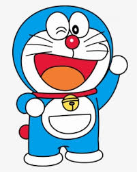

- About
- My Favourite Cartoon
- My work
- Inspiration
- Contact

My name is Aarush Jha
My name is Aarush Jha
I like reading because it is fun imagining all the characters as it makes you feel like a part of the story. Watching TV is fun as it is fun watching people do cool tricks, make everyone laugh etc. And playing games is fun as it helps us to lift our mood when we are sad or to have fun when you are bored. It is fun trying beat your high score again and again, beat your friends and climb the leaderboard.
Doraemon is a Japanese series written and illustrated by Fujiko Fujio, the pen name of the duo Hiroshi Fujimoto and Motoo Abiko. The series has also been adapted into a successful anime series and media franchise. The story revolves around an earless robotic cat named Doraemon, who travels back in time from the 22nd century to aid a boy named Nobita. The first full story in the Doraemon manga series was published in January 1970. A pre-advertisement for the manga was published in six different magazines in December 1969. A total of 1,465 stories were created in the original series, which are published by Shogakukan. It is the best-selling manga for children and one of the best-selling manga in the world, and has sold over 100 million copies as of 2015.
Here's a link to a page, where you will find some of my work
Click on the picture to learn more about the creator of Doraemon
